Die werk wat in hierdie hoofstuk gedek word, sluit
die maak van akkurate isometriese en ortografiese
tekeninge met instrumente in.
Nelson Mandela Hoërskool in die Oos-Kaap is
splinternuut. Dit het ’n baie mooi, nuwe
gemeenskapsaal met ’n verhoog. Die leerders gebruik die verhoog vir die opvoer
van dramas, vir
modeparades, musiekgeleenthede en kooruitvoerings van geestelike musiek. Die
argitekte het
uitstekende beligting en ’n goeie klankstelsel ontwerp, maar hulle het een baie
belangrike ding
vergeet, en dit is om vir rolstoeltoegang voorsiening te maak, sodat gestremde
mense ook toegang
tot die verhoog kan kry.
Die skoolhoof het die Graad 9-tegnologieleerders
gevra om ’n mobiele trap en rolstoeloprit/-afrit te
ontwerp wat voor die verhoog geplaas kan word.
Figuur
1
Figuur
2
’n trap en ’n oprit/afrit
Die Hoërskool Nelson Mandela het ’n nuwe
gemeenskapsaal. ’n Trap en rolstoeloprit/-afrit word vir
die verhoog in die saal benodig. Die skoolhoof het ’n
lys van dinge opgestel wat by die ontwerp van die trap
en die rolstoeloprit/-afrit in gedagte gehou moet word.
As jy na die prent op die vorige
bladsy kyk, sal jy sien wat ’n
oprit/afrit is.
Hierdie goed wat onthou moet word, staan bekend
as die “spesifikasies”.
Die spesifikasies vir die trap en
rolstoeloprit-afrit:
Die trap en die oprit/afrit moet ’n
eenheid-vorm sodat dit beweeg kan word.
Die eenheid moet voor die verhoog inpas,
sodat mense op die verhoog kan
oploop en rolstoele op en af kan gaan.
Die verhoog is 400 mm hoog.
Die trap moet breed genoeg wees vir twee
persone, omtrent 1 200 mm.
Daar moet drie ewe groot treetjies wees.
Die plat gedeelte van elke treetjie is 800
mm lank.
Die oprit/afrit moet breed genoeg wees vir
een rolstoel â 1 000 mm.
Die helling van die oprit/afrit moet 2 433
mm lank wees.
Die oprit/afrit loop teen ’n helling van 10.
Die basis van die oprit/afrit moet 2 400
mm lank wees.
Die oprit/afrit moet ’n handreling hê om
te keer dat die rolstoele afval.
Om jou te help om te dink hoe die trap en
oprit/afrit gaan lyk, kan jy ’n paar
tekeninge maak.
Maak ’n rowwe tekening van hoe jy
dink die saamgestelde trap en oprit/afrit
moet lyk. Maak jou tekening op ’n skoon papiervel en maak dit groot genoeg
om die hele bladsy te vul.
Die afmetings word in die
spesifikasies hierbo gegee. Skryf die afmetings op die
korrekte plekke op jou tekening.
Isometriese tekening kan jou
help om duideliker te sien hoe die ding wat jy in
gedagte het, gaan lyk as dit gebou is. Om ’n isometriese tekening te maak, teken
al die vertikale lyne teen 90 Ì ten opsigte van die basis, en die horisontale
lyne
teen 30 Ì ten opsigte van die basis. Jy kan isometriese ruitpapier gebruik om
jou
hiermee te help.
Aktiwiteit vir huiswerk
Kyk na die rooi lyne op die ruitpapier hieronder.
Sien jy hoe die
vertikale
lyn
opgaan deur die middel van die diamantvorms, en hoe die
horisontale
lyn dwars
oor die middel van die diamantvorms gaan? Die ander lyne gaan teen 30 Ì ten
opsigte van die horisontale lyn.
Gebruik nou ’n liniaal en skerp potlood en voltooi
die tekening van die kubus
hieronder.
Figuur
3
Isometriese tekening
In hoofstuk 1 is daar ’n isometriese tekening van ’n
trap. Hoe dink jy sal ’n
isometriese tekening van die oprit/afrit lyk? Dit sal waarskynlik soos ’n stuk
verjaarsdagkoek lyk.
Figuur
4
In hoofstuk 1 is daar ’n isometriese tekening
van ’n trap. Hoe dink jy sal ’n isometriese tekening van die oprit/afrit lyk?
Dit sal
waarskynlik soos ’n stuk verjaarsdagkoek lyk.
Maak daarna ’n beter skets
op die onderste gedeelte van die bladsy.
’n Skets is ’n rowwe tekening wat jou
help om vinnig jou idees op papier te sit. Dit maak dit makliker om te dink wat
jy besig is om te ontwerp. Jy hoef nie ’n liniaal en presiese afmetings te
gebruik nie.
Kyk na die lys spesifikasies
aan die begin van paragraaf 2.1 en skryf die volgende op jou
tekening:
die hoogte van die oprit/afrit op jou
tekening
die lengte van die
helling
gedeelte van die oprit-afrit
met ander woorde die afstand van A na B op die tekening hier regs
die lengte van die basis
die breedte van die oprit/afrit
die 10 Ì
-hoek
Figuur 5
Die plan in ortografiese tekeninge
Maak ’n skets van die trap op die isometriese
ruitpatroon hieronder. Onthou, dit
het net twee treetjies. Kyk na die lys spesifikasies en skryf die volgende op
jou
tekening:
die wydte van die trap,
die hoogte van die mobiele trap,
die hoogte van elke treetjie, en
die lengte van die horisontale gedeelte van
elke treetjie.
Huiswerk
Jy het reeds ’n
tekening van die trap en ’n tekening van die rolstoeloprit/-afrit.
Skets hulle nou tesame as een struktuur op die isometriese ruitpatroon
hieronder.
Lyk dit of jou trap/oprit/afrit
gaan werk? Voldoen dit aan al die skoolhoof se
spesifikasies?
As jy nie met jou
tekening tevrede is nie, is dit nou die tyd om veranderinge
aan te bring en dit oor te doen, want dit gaan deur jou onderwyser geassesseer
word.
Maak ortografiese tekeninge van jou ontwerp
’n Ander leerder het die oprit/afrit en trappe
hieronder ontwerp, maar hierdie
leerder het nie die spesifikasies op bladsy 16 deeglik gevolg nie.
Figuur 6: Is hierdie ontwerp korrek volgens die spesifikasies
op bladsy 16?
Vergelyk die tekening hierbo met
die spesifikasies van die oprit/afrit wat aan
die begin van die hoofstuk gegee word. Skryf aantekeninge hieronder om enige
spesifikasies wat nie nagekom is nie aan te dui.
Teken op die volgende bladsy ’n
eerstehoekse ortografiese projeksie van
jou eie ontwerp van die trap met oprit/afrit in ooreenstemming met die
spesifikasies wat aan die begin van hierdie hoofstuk gegee word. Let daarop
dat die spesifikasies drie stappe vereis. Teken die bo-aansig, ’n sy-aansig van
die kant van die oprit/afrit af, en ’n vooraansig soos wat ’n persoon wat die
trappe nader om met hulle op te klim, die trap of die oprit/afrit sal sien. Maak
al die tekeninge in ooreenstemming met die presiese afmetings, maar onthou
dat as jy dit volgens die werklike grootte teken, dit nie op die papier sal
inpas
nie. Dink dus aan ’n skaal wat op hierdie werkboekpapier sal inpas. Merk die
werklike afmetings op al die sye af. Jy hoef nie die handreëling te teken
nie.
Maak op die volgende bladsy in
hierdie boek drie ortografiese tekeninge van jou
ontwerp van die trap en oprit/afrit.
Teken: die bo-aansig, ’n sy-aansig,
en ’n entaansig.
Die volgende hoofstuk
Terwyl julle deur die volgende hoofstuk werk, gaan
jy meer leer oor verskillende
kragte wat die goed wat ons bou, kan beskadig. Jy gaan ook leer hoe materiale
sterker gemaak kan word, sodat hulle die kragte wat op hulle inwerk, kan
weerstaan.
Strukture, kragte en materiale
In hierdie hoofstuk gaan jy leer oor kragte wat op
strukture inwerk en hulle kan laat swig (faal), oor
hoe om strukture te versterk, en oor die verskillende materiale wat in strukture
gebruik word.
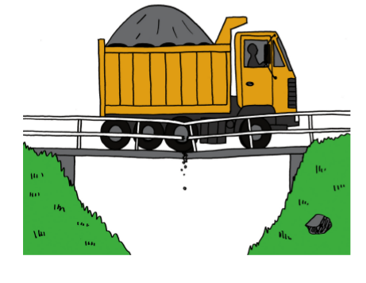
Figuur 1: Hierdie brug kan nie die kragte wat op hom inwerk,
weerstaan nie.
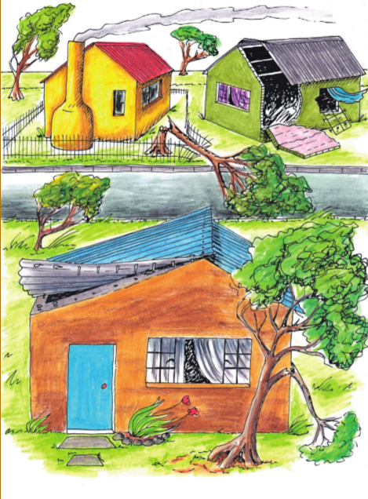
Figuur 2: As ’n huis nie sterk genoeg is nie, kan die wind dit
uitmekaar waai.
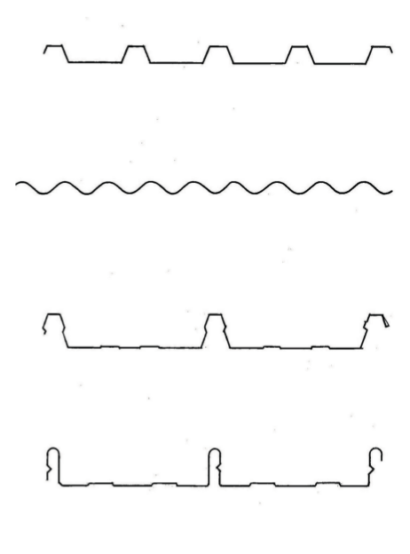
Figuur 3: Dakplate word in verskillende vorme verskaf.
Kragte werk op verskillende plekke in
Identifiseer en analiseer kragte
Die gewig van die seun
druk na onder op die
stoel, soos wat deur die pyl gewys word. As een
voorwerp teen ’n ander voorwerk druk, sê ons dat
daar ’n krag “uitgeoefen” word op die voorwerp.
In hierdie geval kan gesê word dat die seun ’n
afwaartse krag op die stoel
uitoefen
, of dat daar ’n
afwaartse las op die stoel is.
In elkeen van die beelde op hierdie en die volgende bladsy, maak teken 'n
pyl om te wys hoe die las op die struktuur werk.
Figuur 4: Die seun sit stil op die stoel.
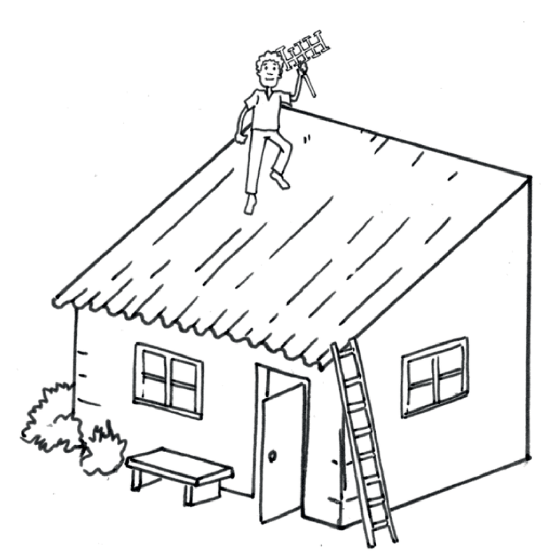
Figuur 5: ’n Man loop op die dak.
Figuur 6: ’n Sonverwarmingstelsel op ’n dak
Is die las op die dak in figuur 5
die hele tyd op dieselfde plek?
Waarom sê jy so?
Is die las op die dak in
figuur 6 die hele tyd op dieselfde plek? Waarom sê jy
so?
Is die las op die brug in
figuur 7 altyd op dieselfde plek? Waarom sê jy so?
Figuur 7: Voertuie gaan oor ’n brug.
Solank iemand stil op ’n stoel bly sit, bly die las op
die stoel op dieselfde plek. Dit word ’n
vaste
of ’n statiese krag genoem.
In die prent hierbo oefen die motor
en die vragmotor elk ’n krag op die brug uit.
Kan die krag wat in elke geval uitgeoefen word ’n statiese krag genoem word?
Verduidelik waarom jy so sê.
Wanneer ’n bewegende voorwerp ’n krag op ’n
ander voorwerp uitoefen, dan sê mens die krag is
dinamies
.
In elk van die volgende gevalle,
sê of die krag wat op die tafel uitgeoefen word
staties of dinamies is. Verduidelik in elke geval jou antwoord.
’n Pot met blomme wat op die
tafel staan.
’n Kat wat op die
tafel loop.
’n Seun wat ’n sokkerbal oor die
tafel rol.
’n Man wat die tafel skrop.
Wat is die verskil tussen die
lasse wat op die twee tafels hieronder uitgeoefen
word?
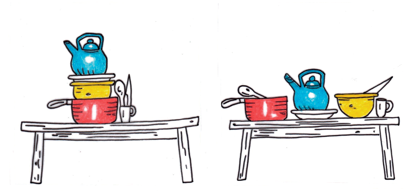
Figuur 8: Verskillende maniere om potte op ’n tafel te pak.
Kyk na die verskillende maniere waarop die twee
vragmotors hieronder gelaai is.
Op die een vragmotor vorm die dromme ’n las orals oor die hele laaibak van die
vragmotor. Op die ander vragmotor is die hele las een groot drom. Die enkele
drom
oefen ’n krag op slegs een klein gedeelte van die laaibak uit.
Figuur 9: Verskillende soorte vragte op twee vragmotors.
’n Las wat ’n gelyke krag uitoefen oor die hele
struktuur wat dit ondersteun, word ’n
eweredig
verspreide las
genoem.
’n Las wat ’n krag uitoefen op een gedeelte van die
struktuur wat dit ondersteun, word ’n
oneweredig
verspreide las
genoem.
Dink aan ’n huis met ’n
sinkplaatdak en die kragte wat die sinkplate op die
dakstruktuur uitoefen.
Is die las eweredig of
oneweredig versprei? Waarom sê jy so?
Is die las staties of dinamies?
Waarom sê jy so?
Dink aan mense wat met ’n houttrap
op en af loop.
Is die las eweredig of
oneweredig versprei? Waarom sê jy so?
Is die las staties of dinamies?
Waarom sê jy so?
Jy moet twee houttafels ontwerp en
jy is versoek om so min hout as moontlik
te gebruik. In die geval van die een tafel, sê die ontwerpopdrag dat die las op
die tafel altyd staties en eweredig versprei sal wees. In die geval van die
tweede
tafel, sê die ontwerpopdrag dat dit dieselfde las as die eerste tafel sal dra,
maar
dat die las soms dinamies en ook oneweredig versprei sal wees. Beskryf hoe jou
ontwerpe vir die twee tafels van mekaar sal verskil en verduidelik waarom.
Kragte werk op verskillende maniere in
Kragte kan op die
volgende maniere op strukture en
dele van strukture inwerk:
trekkrag,
wringkrag,
drukkrag,
skuifkrag, en
buigkrag.
Die verskillende stukke van ’n raamstruktuur
word
seksies of elemente of dele van die struktuur genoem.
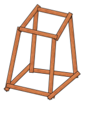
Figuur 10: ’n Raamstruktuur wat
van planke gemaak is.
Kragte kan stoot, trek en verdraai
Gebruik gebruikte skryfpapiervelle en rol ses buise
daarmee. Plak hulle met gom of
kleefband vas om te keer dat hulle afrol.
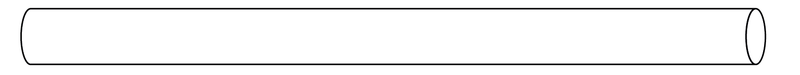
Figuur 11
Plaas jou hande aan beide eindpunte
van ’n buis en druk hulle na mekaar toe.
As jy dit doen, oefen jy “drukkrag” op die buis uit.
Gryp ’n buis aan elkeen van sy
eindpunte en probeer om dit uitmekaar te
trek. As jy dit doen, oefen jy “trekkrag” op die buis uit. Jy plaas die buis
onder
spanning.
Plaas die eindpunte van ’n buis op
twee boeke en druk afwaarts in die middel
van die buis. Wat gebeur en watter soort krag het jy op die buis toegepas?
Neem ’n buis by sy twee punte en draai dit
soos in hierdie prent gewys word.As jy dit
doen, pas jy “wringkrag” toe.
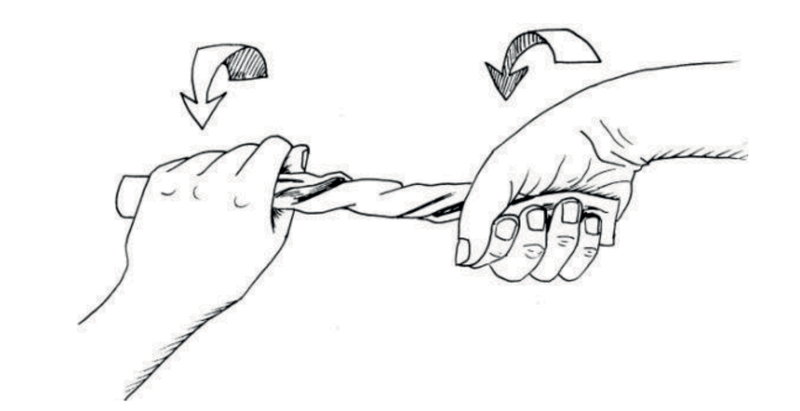
Figuur 12
Maak twee buise aan mekaar vas
deur ’n vuurhoutjie of klein stokkie daardeur
te druk, soos hieronder gewys word.
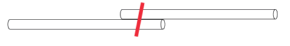
Figuur
13
As jy die twee papierbuise van
mekaar wegtrek, pas jy “skuifkrag” op die stokkie
toe.
Vind krag in vorm
Vou ’n gebruikte A4-papiervel oor
sy lengte in twee helftes.
Figuur 14
Vou dit weer:
Figuur 15
Vou dit ’n derde keer, sodat jy ’n
plat
strook het wat agt lae dik is.
Maak nog twee gevoude stroke soos
hierdie een.
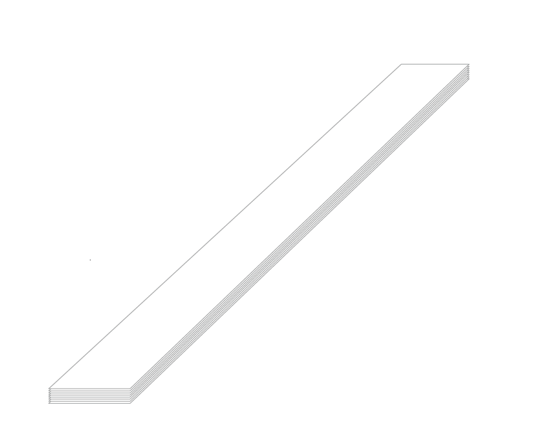
Figuur 16
Plaas die gevoude strook oor die
rand van jou skoolbank soos hieronder gewys
word. Druk dit met een hand op die bank vas en druk liggies met die ander
hand op die oorhangende stuk van die strook om dit na onder te laat buig.
Figuur 17
Vou nou jou papierstrook weer
halfpad oop en vou dit weer, sodat jy ’n
driehoekige buis kry, soos hieronder gewys word.
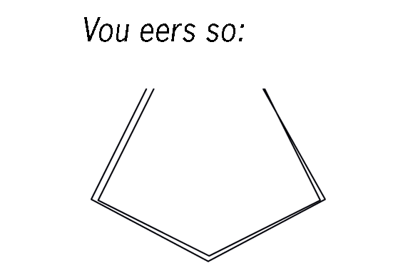
Figuur 18
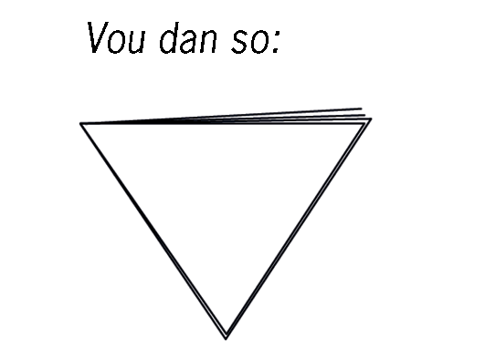
Figuur 19
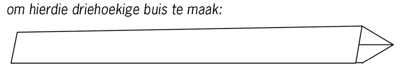
Figuur 20
Plaas die driehoekige buis oor die
kant van jou lessenaar soos wat jy met die
plat strook in vraag 2 gedoen het. Druk dit met een hand op die
lessenaarblad vas en druk dan liggies na onder met die ander hand
op die verste deel om dit te laat afbuig.
Wat was die maklikste om te
buig, die plat strook of die driehoekige buis?
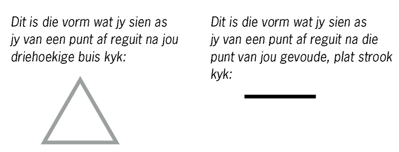
Figuur 21: Dwarssnitte
Die vorm wat jy sien as
jy reguit na een punt van ’n deel van ’n struktuur kyk,
word ’n “dwarssnit” of ’n “profiel” genoem.
Maak vryhandsketse
van die dwarssnitte van ’n ronde, ’n vierkantige en ’n
driehoekige buis in die spasie hieronder.
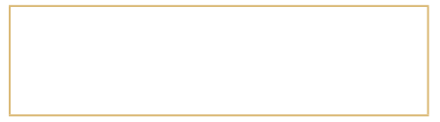
Maak jou driehoekige buis oop
en vou dit weer om
’n buis met ’n T-profiel, soos hier regs vertoon, te
maak.
Figuur 22
Figuur 23
Laat jou T-vormige “balk”
soos hier regs gewys,
regop op jou skoolbank staan en druk liggies van
die bo-punt na onder. Moenie dit nou buig nie.
Neem een van die plat stroke wat jy vir vraag 1
gemaak het. Hou dit regop en druk dit na onder
soos jy met die T-vormige balk gemaak het.
Watter een van die twee stroke is die sterkste as
jy afwaartse druk op die punt daarvan toepas,
die plat strook of die T-vormige balk? Verduidelik
waarom.
’n T-vormige balk weerstaan drukkrag beter as
’n plat strook wat ewe lank is en van dieselfde
hoeveelheid materiaal (papier) gemaak is.
Figuur 24
Vergelyk die drukweerstandigheid
van verskillende balke en buise, elk gemaak
van een vel A4-papier, met die volgende deursnit-vorms of profiele: T-vorm;
vierkantvorm en ronde vorm. Verduidelik jou antwoorde.
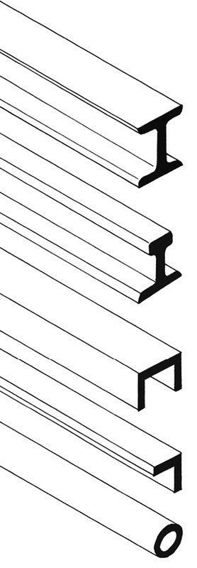Figuur 25: Metaal balke
Metaalbalke wat
gebruik word om raamstrukture
te bou, word in ’n verskeidenheid profiele
vervaardig. ’n Klompie gewilde profiele word
hieronder gewys.
H-profiel. Hierdie profiele word dikwels
gebruik
as regop stutte of pilare, byvoorbeeld in geboue.
Dit weerstaan druk baie goed en buig nie maklik
nie.
I-profiel. Hierdie profiel word vir
spoorstawe
gebruik. Die breë basis verskaf stabiliteit.
U-profiel. Hierdie profiel is ligter as die
H-profiel.
Dit word dikwels gebruik om horisontale
ondersteuning te gee, byvoorbeeld in rakke. Die
onderstel van ’n vragmotor word normaalweg
met U-balke gemaak.
Hierdie profiel word ’n hoekyster genoem,
selfs
al is dit van ’n ander metaal gemaak. Dit het ’n
hoër buigkrag as plat stroke. Dit is lig en word
dikwels vir kruisverspanning in kragmaste,
torings en ander strukture gebruik.
Buisprofiel. Dit is die beste profiel om
verwringing te weerstaan.
Gebruik van interne kruisverspanning om verwringing te voorkom
Stel jou voor jy het met
reguit stukkies
hout ’n raamstruktuur gemaak.
Figuur 26
Stel jou nou voor jy
draai hierdie struktuur
inmekaar soos die persoon op die foto die
handdoek inmekaardraai.
Figuur 27
Die raamstruktuur mag
uiteindelik so lyk:
Figuur 28
Om te voorkom dat die
struktuur so
opgedraai word, moet jy, soos wat hier
gewys word, meer elemente byvoeg.
Figuur 29
Dit word interne kruisverspanning genoem.
Verskillende materiale vir verskillende doeleindes
Hoe materiale van mekaar kan verskil
Wat buig die maklikste, jou potlood
of ’n papiervel?
Plaas ’n papiervel plat op jou
skoolbank se blad neer. Tel dit met beide hande op
en buig dit sonder om dit te vou. Plaas dit terug op die bank. Is dit weer plat?
Materiaal wat maklik buig, maar maklik na sy
oorspronklike vorm terugkeer, as jy dit laat los, word
buigsame materiaal
genoem.
Materiaal wat nie buigsaam is nie, word
onbuigsame
of
stywe materiaal
genoem.
Is klei buigbaar of styf?
Is die poot van ’n stoel
buigbaar of styf?
Is ’n stuk draad buigbaar of
styf?
Is jou skoen buigbaar of styf?
Druk jou vinger teen jou
skoolbank. Druk nou jou vinger teen jou arm.
Wat is die verskil tussen die druk van jou vinger teen jou bank, en die
druk van
jou vinger teen jou arm?
As jy met jou vinger teen ’n sak
sand druk, sal dit dieselfde wees as om teen jou
bank of jou arm te druk?
Bakstene word gemaak deur klei
te bak totdat dit hard is.
Sommige materiale is hard, en
ander materiale is sag.
Dink aan ’n baksteen en ’n stuk
skuimrubber van dieselfde grootte
(soos die skuimrubber wat in matrasse gebruik word).Watter een van die
twee is die maklikste om op te tel?
Hoeveel stene dink jy kan jy met
gemak dra as jy hulle in ’n krat op jou
skouer dra?
Hoeveel stukke baksteengrootte
skuimrubberstukke dink jy kan jy met
gemak dra as jy hulle in ’n krat op jou skouer dra?
’n Baksteen is baie swaarder as ’n stuk skuimrubber
met dieselfde grootte.
Een verskil tussen gebakte klei en skuimrubber is, dat as jy twee ewe groot
stukke daarvan het, die gebakte klei swaarder as die skuimrubber sal wees. Dit
sal
meer arbeid vereis om gebakte klei op te tel of te dra.
Die verskil tussen gebakte klei en skuimrubber kan soos volg beskryf word:
gebakte klei het ’n hoër digtheid as skuimrubber.
Watter materiaal het die hoogste
digtheid, hout of rots?
Watter materiaal het die
hoogste digtheid, glas of plastiek?
Stukkies metaal wat buite
rondlê, lyk soms bruin.Dit
word roes of korrosie genoem. Roes word gevorm deur
’n chemiese reaksie tussen die metaal en suurstof in
die lug of water. Hout en glas roes nie. Rots wat yster
bevat, roes.As jy in die veld stap, sien jy soms stukke
rots met presies dieselfde bruin kleur.
Geroeste rots kan verskillende
kleure hê, soos die kleure in
die gekleurde strook onder aan
hierdie bladsy. In die verlede
is kleur om verf te maak van
geroeste rots verkry.
Metaal word gebruik vir die
bouwerk aan torings, dakke, motors en vragmotors
en soms selfs meubels.Wat kan ’n mens doen om te voorkom dat metaal roes?
lets meer oor metale
Daar is baie verskillende metale soos
koper,
yster, aluminium, chroom, goud, platinum en baie
ander. Omdat yster so volop is, is dit goedkoper
as die meeste ander metale. Yster is ’n maklike
metaal om mee te werk omdat dit maklik in
verskillende vorms verwerk kan word. Yster
word meestal met ân bietjie koolstof gemeng om “staal” te vorm, wat baie sterker
as suiwer yster
is. Ongelukkig roes yster maklik terwyl ander
metale nie so maklik, of glad nie, roes nie.
Om
hierdie rede word yster dikwels met ander metale
gemeng, byvoorbeeld chroom, om dit meer
bestand teen roes te maak. “Vlekvrye staal” is
staal wat baie chroom in het.
Materiale in ’n huis
’n Huis is ’n goeie voorbeeld van ’n struktuur wat
met baie verskillende materiale
gemaak word. Om ’n huis soos die een hieronder te bou, moet jy bakstene, beton,
hout en metaal gebruik.
Figuur 30
Verskillende dele van die huis word gelys in die linkerkantse kolom van die
tabel hieronder. Skryf in die regterkantse kolom van watter materiaal jy dink
die betrokke deel van die huis gemaak is.
Deel van die huis
Materiaal waarvan
dit gemaak is
Die mure
Die vensterrame
Die deur
Die dakstruktuur
Die dakbedekking
Die heining
Die plaveisel om die huis
Bouers gebruik bakstene, beton, hout en staal,
want elkeen van hierdie materiale
is op verskillende maniere bruikbaar. Jy kan sê verskillende materiale het
verskillende “eienskappe”.
Beton is hard en sal nie maklik skrape opdoen nie,
daarom gebruik bouers dit op
huisvloere. Beton is ook ferm, daarom buig dit nie as ons daaroor loop nie.
Beton
word nie deur water beskadig nie en sal nie roes nie.
Bakstene buig nie en roes nie, daarom word hulle
gebruik om mure mee te bou.
Hout, omdat dit buigsaam is, word in ’n huis
gebruik vir deure, vensters en
dakke. Dit beteken dat as jy die deur hard toeslaan, die hout effens sal meegee
maar nie sal breek nie. Hout is ook lig, goedkoop en maklik om mee te werk.
Hout kan deur water en die hitte van die son
beskadig word. Wanneer hout nat
word, kan dit skeeftrek en vrot. Om hout teen beskadiging te beskerm en dit
langer
te laat hou, moet dit met ’n laag vernis, spesiale olie of enige ander
beskermende
materiaal bedek word.
Staal is sterk en hard. Dit is ook buigsaam en nie
maklik om met ’n hamer
stukkend te slaan nie. Dit word daarom vir sekuriteitshekke gebruik. Staal word
egter deur water beskadig, in ’n proses wat roes of korrosie genoem word. Om te
voorkom dat staal roes, moet mens dit met ’n spesiale verflaag bedek.
Skryf die materiale
wat vir die onderskeie dele van die huis gebruik word in die
middelkolom hieronder. Skryf daarna die redes waarom jy dink elke materiaal
vir daardie spesifieke deel van die huis gebruik word, in regterkantse kolom.
Deel van die huis
Materiaal
Redes vir keuse van
materiaal
Mure
Vensterrame
Deur
Dakstruktuur
Dakbedekking
Heining
Plaveisel om die huis
Party huise het teëldakke, ander het sinkdakke. Wat is die voordele
en
nadele
van teëldakke?
Voordele van teëldakke
Nadele van teëldakke
Wat is die voordele en nadele van sinkdakke?
Voordele van sinkdakke
Nadele van sinkdakke
In die ou dae is wawiele van hout
gemaak. Vandag gebruik ons
rubberbuitebande. Waarom het ons van hout na rubber oorgeskakel?
Wanneer bouers ’n ruit in ’n
vensterraam sit, druk hulle ’n sagte, klewerige
materiaal, wat stopverf genoem word, al om die rande van die ruit. Die
stopverf droog uit totdat dit hard is, en verhoed dat die glas uit die raam val.
Grondboontjiebotter is ook ’n sagte, klewerige materiaal wat uitdroog in die son
totdat dit hard is. Waarom is dit nie ’n goeie idee om grondboontjiebotter te
gebruik om ruite in vensterrame te sit nie?
Volgende week
Volgende week begin jy met jou praktiese
assesseringstaak. Jy gaan ’n plan maak
om ’n probleem vir ’n gemeenskap op te los.
Mini-pat 1 ’n brug om die gemeenskap te help
Oor die volgende ses weke gaan julle ’n model van
’n brug ontwerp en bou. Om dit te doen moet julle
deur die verskillende stadiums van die ontwerpproses werk en in groepe van drie
saamwerk.
Figuur 1
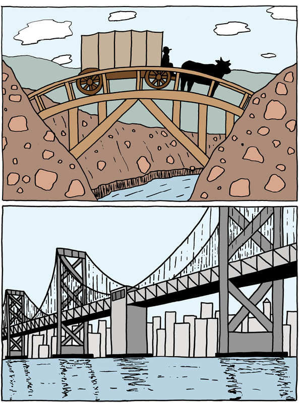
Figuur 2
Week 1
Ondersoek ouma margaret thabang se probleem (60 minute)
Lees in jou eie groep die volgende storie deur.
Figuur
3
Riviere verskaf water wat gemeenskappe so nodig
het, maar water kan soms ’n
mens se lewe baie moeilik maak. Gedurende die reënseisoen sukkel mense aan
beide kante van die rivier byvoorbeeld om die rivier oor te steek as daar nie ’n
brug is nie.
Baie van die mense in KwaNongawu langs die
uThukelarivier in KwaZulu-
Natal werk aan die ander kant van die rivier. Die dokter, banke en winkels wat
hulle moet besoek, is ook aan die ander kant van die rivier.
Skoolkinders steek die rivier oor om hulle skole
aan die ander kant te bereik en
die ouer mense moet een maal per maand deur die rivier loop vir die uitbetaling
van hulle regeringstoelae by die kantore aan die ander kant.
Gewoonlik steek die dorpenaars die rivier te voet
oor, want die naaste brug
is baie ver van hulle af. In die reënseisoen, as die rivier afkom, word
dit baie
gevaarlik. Die watervlak is so hoog dat dit moeilik is om veilig daardeur te
kom,
en die dorpsbewoners het ook krokodille in die rivier gesien. Almal is bang om
te
verdrink of deur ’n krokodil aangeval te word, maar hulle het geen ander keuse
nie en moet deur die rivier gaan om die ander kant te bereik.
Skryf ’n paar sinne om die
dorpenaars se probleem te verduidelik.
Kan jy ’n paar maniere voorstel om
ouma Margaret Thabang oor die rivier te
help?
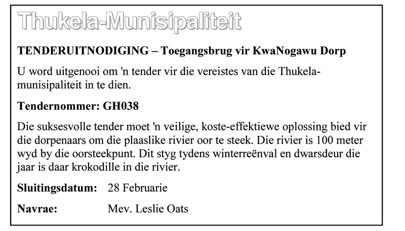
Figuur 4: Die versoek om ’n tender wat in
’n plaaslike koerant geplaas is.
'n Tender is ’n
versoek om
werk deur ’n
maatskappy.
Dit gee
besonderhede
oor hoeveel die
maatskappy gaan
vra om die werk
te voltooi.
Die Thukela Munisipaliteit het ’n advertensie
geplaas om kontrakteurs te versoek
om tenders in te dien vir die bou van ’n struktuur om mense te help om veilig
oor
die rivier by die dorpie, KwaNogawu, veilig oor te steek.
Munisipaliteite word nie toegelaat om ’n
kontrakteur te kies sonder om aan soveel
kontrakteurs as moontlik die geleentheid te gee om aansoek te doen nie. Dit is
om te voorkom dat iemand voorgetrek word, en om korrupsie te voorkom. Elke
kontrakteur skryf ’n tenderdokument wat ’n beskrywing is van sy of haar plan vir
die werk en ook wys hoeveel hy of sy sal vra om die werk te voltooi. Die werk
word
gegee aan die kontrakteur wat die beste plan teen die laagste prys voorlê.
Jy gaan ’n struktuur bou om die gemeenskap te
help. Lees weer die storie en
ondersoek die verskillende brûe hieronder om te besluit wat die beste oplossing
vir die probleem sal wees.
Ondersoek strukture om die probleem op te los (60 minute)
Op hierdie en die volgende bladsy is daar tekeninge
van verskillende tipes brûe.
Julle het in graad 8 oor hierdie brûe geleer. Kan jy onthou wat die name
beteken?
As jy nie kan onthou nie, kyk na jou graad 8-boek of vra jou onderwyser om jou
te
help.
A: ’n
Balk-en-kolombrug
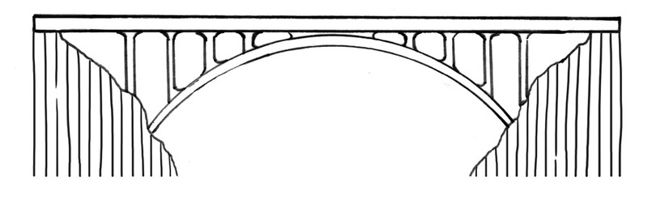
B: ’n Boogbrug
C: ’n
Vakwerkbrug
D: ’n Hangbrug
E: ’n Vrydraerbrug
F: ’n
Kabelankerbrug van die harptipe
G: ’n
Kabelankerbrug van die waaiertipe
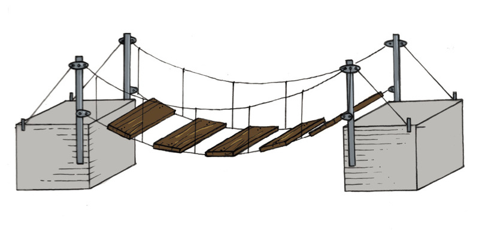
H: ’n Klein
hangbrug
Figuur 5
Vir verskillende tipes brûe word verskillende soorte
materiale en
konstruksiemetodes gebruik, maar hulle het almal ’n soortgelyke funksie.
Bespreek in julle groepe party van die voordele en
nadele van elkeen van die
brûe vir die gemeenskap. Dink oor watter dele die gemeenskap sal help en watter
nie sal help nie.
As die brug vir motors bedoel word, mag dit te
duur wees vir julle tender.
Onthou dat die brug die gemeenskap se probleem moet oplos, dit wil sê dit moet
doelgeskik
wees. In hierdie geval beteken dit dat jou brug sterk moet wees en
hoog genoeg om mense te dra, maar nie motors nie. Jou brug moet egter sterk
genoeg wees om vloede, wat nogal algemeen in KwaZulu-Natal is, te weerstaan.
Jou brug moet stabiel wees en nie sywaarts heen en weer beweeg en ou mense of
kinders laat val as hulle oor die brug loop nie. Dit moet ook ’n struktuur
hêwat ’n
breë rivier kan oorspan.
Gebruik die volgende lys om jou te help om elkeen
van die brûe in figuur 5 op
bladsy 48 en 49, te ondersoek. Bring ook prente van brûe skool toe. Jy kan
foto’s
van brûe in ou tydskrifte en koerante kry.
Kontrolelys vir die
ondersoek van brûe
Ja
Nee
Is die brug vir motors?
Is die brug vir mense?
Is die brug te duur vir die tender?
Kan die brug sterk genoeg en hoog genoeg
gebou word sodat dit
nie deur vloede meegesleur sal word nie?
Kan die brug stabiel gebou word sodat dit
nie sywaarts beweeg
nie?
Kan die brug lank genoeg gebou word sodat
dit die rivier
heeltemal oorspan?
Is die brug sterk genoeg sodat die
dorpsbewoners dit kan gebruik
om veilig daaroor na die ander kant van die stroom te loop?
Week 2
Ontwikkel rowwe sketse van idees (30 minute)
Teken rowwe sketse van jou idees vir ’n brug wat die
gemeenskap moet help.
Gebruik die sketstegnieke wat jy in grade 7 en 8 geleer het.
Totaal [10]
Skets jou idees hier:
Evalueer en pas jou rowwe sketse aan (30 minute)
Jou groep gaan nou ’n tender voorberei. Om te begin,
kies die beste ontwerp in julle
groep. Dit beteken dat julle een skets uit al die rowwe sketse moet kies. Om jou
te
help kies, beantwoord die vogende vra:
Vrae
Ja
Nee
Laat die struktuur mense toe om veilig oor
die rivier te beweeg?
Beskerm die struktuur mense teen krokodille?
Laat die struktuur ’n groep mense toe om die
rivier veilig oor te
steek?
Sal die struktuur veilig wees terwyl die
rivier in vloed is?
Is die struktuur duursaam en sal dit lank
hou sonder om te
breek?
Word die struktuur met die regte materiale
gemaak? Onthou
dat die brug voortdurend met water in aanraking mag wees en
moontlik kan roes.
Sal die struktuur beide statiese en
dinamiese kragte kan
weerstaan?
Sal dit baie duur wees om die struktuur te
bou?Onthou, jy bou
dit vir mense, nie motors nie.
Sal die struktuur duur wees om te onderhou?
Rig die struktuur skade aan die omgewing?
As die ontwerpe op die sketse nie aan hierdie
vereistes voldoen nie, doen
aanpassing totdat hulle dit wel doen.
Teken die sketse van julle aangepaste ontwerpe in
die spasie op die volgende
bladsy. Dié oplossing is julle finale oplossing, en dit sal die basis van jou
werkstekening vorm.
Maak jou sketse hier:
Ontwerpopdrag met spesifikasies en beperkinge (30 minute)
Skryf ’n ontwerpopdrag wat verduidelik wat jy wil
hêdie struktuur moet doen. Jou
ontwerpopdrag moet die spesifikasies en beperkings van jou ontwerp lys. Gebruik
die oop spasie hieronder om die ontwerpopdrag te skryf.
Onthou spesifikasies is dinge wat jou ontwerp
moet
hê en beperkings is die
dinge wat jou ontwerp
nie kan hê nie.
Die spesifikasies en beperkings word
gewoonlik in die tenderkennisgewing genoem
Spesifikasies mag die volgende insluit:
Die brug moet binne ’n spesifieke tyd
voltooi word.
Die brug moet in ooreenstemming met die
begroting gebou word.
Die brug moet die gemeenskap help. Jy kan
byvoorbeeld mense uit die plaaslike
gemeenskap in diens neem en hulle oplei, terwyl hulle aan die brug werk. Dit
sal hulle goeie vaardighede leer wat hulle na afloop van die projek sal help om
werk te kry.
Die brug moet gebruikersvriendelik vir
gestremde en ouer mense wees.
Beperkinge kan die volgende insluit:
Tyd- en kostebeperkings. Die bouprojek mag
byvoorbeeld nie langer as ’n
spesifieke tyd neem om af te handel nie, en dit mag nie meer as ’n spesifieke
bedrag kos nie.
Die brug mag nie rolstoelgebruikers
uitsluit nie.
Daar mag nie meer as ’n spesifieke getal
mense van buite die gebied vir die
brugbouery in diens geneem word nie.
Vroue mag nie van werk aan die projek
uitgesluit word nie.
Totaal [10]
Skryf jou ontwerpopdrag in
die spasie hieronder en op die volgende bladsy:
Teken ’n vloeidiagram (30 minute)
Onthou jy wat ’n vloeidiagram is? ’n
Vloeidiagram is ’n
opsomming van al die stappe wat jy moet volg om iets
te beplan of te maak. Dit is ’n visuele manier om die
stappe in ’n beplannings- of maakproses te wys.
’n Vloeidiagram is ’n opsomming, gebruik dus
kort sinne of net
sleutelwoorde
om jou stappe neer
te skryf. Trek dan ’n raampie om elke stap en ’n pyl
tussen die stappe.
Kyk na die voorbeeld van ’n vloeidiagram
hieronder.
Teken nou ’n vloeidiagram van hoe jy jou brug gaan
bou. Doen dit op die volgende bladsy.
Dink aan die heel eerste ding wat jy sal moet
doen
en begin daar. Gaan jy byvoorbeeld eers die rivier
meet, die materiaal koop, die personeel oplei of begin
deur jou begroting op te stel?
Jy kan die vloeidiagram later verander terwyl
jy die
model van jou brug maak. Ingenieurs en tegnoloë
verander dikwels hulle planne terwyl hulle aan ’n
projek werk.
“Visueel” beteken iets wat jy
kan sien.
'n Sleutelwoord is ’n woord
wat ’n hele sin kan vervang.
Byvoorbeeld: vir “Maak ’n lys
van jou take,” kan jy net skryf
“lys”
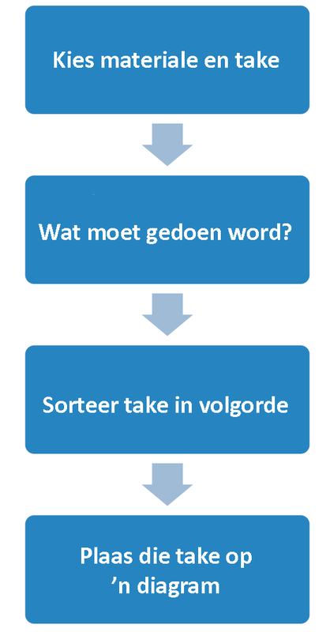
Figuur 6Teken jou
vloeidiagram hier:
Week 3
Maak werkstekeninge (60 minute)
“Werkstekening” is gidse wat ons wys hoe om ’n
spesifieke struktuur te bou. Maak
’n werkstekening van jou brug. Dit moet volgens skaal geteken word en soveel
detail as moontlik wys.
Elkeen van jul tekeninge moet die afmetings van
die
struktuur wys en die skaal wat jy gekies het. Gebruik
die korrekte soorte lyne.
Kyk weer na hoofstuk 1 om jou te herinner
hoe om
ortografiese tekeninge te
maak.
Jy benodig die volgende toerusting:
30 °-, 60 °- en 90 ° -tekendriehoek,
’n skerp 2H-potlood, en
maskeerband om jou tekenpapiervel aan jou
tekenbord vas te plak.
Alle projekte wat geld kos, het ’n
begroting nodig. ’n Begroting is ’n plan waarin
daar na die verskillende kostes gekyk word en hoe die geld aangewend gaan word.
Voordat jy met enige stuk werk begin, is dit
belangrik om seker te maak jy het genoeg geld.
Jy mag andersins reeds halfpad deur die projek
sonder geld sit.
Jy moet ook die tenderraad oortuig dat jou brug
koste-effektief is, wat beteken dat dit veilig is vir
mense en die omgewing, en dat dit nie te duur is
vir hierdie doel nie.
Wanneer jy die brug bou, dink aan die dinge wat
geld gaan kos, byvoorbeeld:
materiale,
arbeid,
onwerpers en ingenieurs,
toerusting wat jy huur of aankoop en
vervoer.
Onthou dat julle’n kontrakterende maatskappy is en
’n wins wil maak. Sodra julle
die ander koste bereken het, voeg ’n bedrag by vir julle wins.
Daar sal ander maatskappye
wees wat ook vir die werk tender, hou dus julle
koste so laag as moontlik om die tender so aantreklik as moontlik te maak. Moet
egter nie die veiligheid van die brug in gedrang bring, of toelaat dat dit nie
vir die
vereiste doel geskik sal wees nie. Balanseer die behoefte om ’n wins te maak,
met
die behoefte om ’n veilige brug te bou.
Vir hierdie oefening moet jy ’n kostetabel
saamstel.
’n Kostetabel is ’n opsomming van al jou onkostes.
Op die volgende bladsy is ’n voorbeeld van ’n
kostetabel vir ’n ander brug. Jy kan
party van die materiaalkostes in hierdie tabel gebruik in die kostetabel vir jou
eie
brugontwerp.
Voorbeeld:
Itembeskrywing
Hoeveelheid
Prys per
eenheid (Rand)
Totaal
(Rand)
Materiaal
Sement (80 kg)
50
90
10 000
Dennehoutplanke (200 cm à 30 cm
à 2 cm)
200
Sakke spykers
(10 × 3
cm)
10
Bakstene
5 000
Staal I-balke
(5 m × 6
cm)
20
1
000
20 000
Subtotaal
Arbeid
Arbeiders
25
25 per uur
Skrynwerker
2
320 per
dag
Voorman
1
600 per
dag
Sweisers
3
720 per
dag
Subtotaal
Masjinerie/Toerusting
Stootskraper
1
2 000 per dag
Padskraper
1
2 500 per dag
Grawe en ander toerusting
25
10 per
dag
Subtotaal
Ander
personeelkoste
Ingenieur
Argitek
Werkbestuurder
TOTAAL
Julle eie lys sal anders lyk, want dit sal afhang
van die materiale wat julle
gekies het om julle brug mee te bou. As jy nie heeltemal seker is oor bedrae of
hoeveelhede nie, kan jy altyd ’n klein bietjie ekstra by jou finale syfer voeg.
Dit is
beter om ’n ietsie oor te hê as om tekort te skiet.
Om jou te help om die koste te bereken, praat met
die eienaar van ’n
gereedskapwinkel, ’n boukontrakteur, of ’n lid van jou familie wat iets weet van
begrotings en boukoste. Jy kan ook die Geelbladsye gebruik om verskaffers na
te slaan. Hulle sal vir jou inligting gee as jy hulle van jou projek vertel.
Moenie
sommer koste uit jou duim suig nie. Jy wil jou begroting akkuraat hê.
Skryf jou begroting hier en op die
volgende bladsy
neer.
Totaal [10]
Winsgrens
Wat is die addisionele bedrag wat jy gaan vra?
Onthou, jy moet ’n wins te maak. Hierdie bedrag
moet regverdig wees teenoor
jou en die owerheid wat die kontrak gaan toeken.
Week 4
Bespreek en oefen die maak van jou model l (60 minute)
Julle gaan ’n model van julle struktuur maak.
Bespreek in julle groepe hoe julle dit
gaan doen.
Dink deeglik oor al die materiale wat julle gaan
nodig hê om die model te bou.
Het julle papier, lym, en/of geriffelde karton nodig? Wat van gereedskap? Het
julle
’n skêr of lym nodig?
Maak ’n volledige lys van al die materiale en
gereedskap wat nodig is vir die bou
van julle model.
Om georganiseerd te bly, moet julle ’n plan hê.
Vra julle-self vrae soos:
Wat moet ons eerste doen?
Watter materiale benodig ons vir elke stap?
As julle besluit het wat julle wil doen, voeg dit
by die vloeidiagram. Elke groepslid
moet een saamstel.
Die volgende aktiwiteit sal jou help om sterk
strukture van papier te maak. Jy
kan hierdie strukture gebruik om jou te help om jou model van ’n brug te bou.
Maak ’n model van jou brug (60 minute)
Elke groep bou een model wat moet lyk soos die
werkstekening. Dit moet netjies,
veilig en op skaal gebou word. Jy kan materiale soos karton, tou, draad, hout,
koeldrankstrooitjies, plastiek en klei gebruik. Jy kan ook lym en verf gebruik.
Wees die hele tyd van veiligheid bewus, veral as
julle met lemme en giftige gom
werk. (Houtgom, wondergom en Pritt is gelukkig nie giftig nie.)
Onthou om die stappe te volg soos in die
vloeidiagram gewys word. Elkeen moet
by die maak van die model betrokke wees.
Totaal [20]
Week 5
Ontwerp ’n evalueringsinstrument (6 0 minute)
Maak in julle groepe ’n kontrolelys vir beoordeling
om te sien of jul struktuur ’n
goeie oplossing vir die gemeenskap se probleem is. Gebruik die spesifikasies van
jou ontwerpopdrag van week 1 om jou te help om die kontrolelys te maak.
Hier is ’n voorbeeld van ’n paar van die items wat
in ’n kontrolelys vir ’n projek
kan wees:
Is die struktuur stabiel?
JA/NEE
Is die struktuur stewig?
JA/NEE
Is die struktuur duursaam?
JA/NEE
Laat die struktuur meer as een persoon op
’n slag toe om
dit oor te steek?
JA/NEE
Voeg nou jou eie
items by die kontrolelys om dit klaar te maak.
Skryf jou kontrolelys hier neer:
Evalueer jou span se oplossing (60 minute)
Vergader met al die groepe in die klas. Deel julle
kontrolelyste tussen die groepe
en werk almal saam om die beste kriteria te kies. Op dié manier sal julle almal
die beste kriteria kan gebruik om ’n enkele kontrolelys te maak wat elkeen kan
gebruik.
Gebruik die gekose
kontrolelys om jou groep se oplossing vir die gemeenskap se
probleem te beoordeel. Sluit hierdie kontrolelys by jou tenderdokumente in.
Week 6
Bied julle tender vir die klas aan (120 minute)
Dit is tyd om julle tender vir die klas aan te bied.
Julle moet ’n aanbieding van 15
minute lank doen om te probeer om die tenderraad te oortuig dat julle tender die
beste een is. Elke lid van die groep moet ’n deel van die tender vir die klas
aanbied.
Totaal [10]
Die tender moet die volgende inligting insluit:
sketse en ortografiese tekeninge,
’n begroting,
julle model, en
’n artistiese tekening van julle finale
plan.
Beplan watter lid van die groep watter deel van
die tender sal aanbied. Iemand
moet die artistiese tekening van julle struktuur teken. Hierdie tekening moet
kleur
en detail hê om die tenderraad te beïndruk.